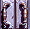

| William L. Clements Library
The University of Michigan William Dickson Papers |
Papers, 1849-1912
83 folders; 0.5 lin. feet
William Martin Dickson's life and career echo the familiar American theme of the self-made man. He was born at Lexington, Ind., in 1827 and lost his father, a farmer, at the age of 8. Despite financial hardship, Dickson managed to graduate from Miami University in Oxford, Ohio -- by sweeping out classrooms to pay tuition, according to family history. He then studied law while supporting himself as a schoolteacher and was admitted to the Kentucky bar in 1848. Over the next two years the ambitious young man put himself through Harvard Law School. Returning to the midwest, he settled in Cincinnati and eked out a living as a teacher, tutor, and reporter for the Cincinnati Times. On October 18, 1852, he married Annie Marie Parker of Lexington, Ky., a first cousin of Mary Todd Lincoln.Six months after his marriage, Dickson got his big break. Running as an underdog on the Independent ticket, he won election to prosecuting attorney of the Cincinnati police court. He resigned in April, 1854, to form a very successful law partnership with Alphonso Taft (father of the future President) and Thomas Marshall Key. At 31, he was appointed judge of the Common Pleas Court. Dickson maintained an active role in politics despite the fact that he never held elective office after his stint as public prosecutor. After serving as an Ohio presidential elector in 1860 he became part of inner Washington political circles, associating with Abraham Lincoln, Edwin M. Stanton, and Salmon Chase, and participating in the framing of the Emancipation Proclamation. In the fall of 1861 Dickson became acquainted with General McClellan, who offered him a position as assistant judge advocate. Dickson declined the appointment, however, after learning first-hand of McClellan's timidity as a military leader and of his contemptuous attitude toward President Lincoln. A memoir of the entire episode written later in Dickson's life features colorful characterizations of McClellan and his circle, Lincoln, and the Washington scene early in the war.
Within a year of the war's end, Dickson, only thirty-nine, became ill from "nervous prostration." He removed himself from the legal and political scene, but maintained a keen interest which he expressed in his private correspondence and in essays and letters written for publication on such topics as reconstruction, black suffrage, and civil service reform. Dickson considered himself a genuine Republican, one of the founders of the party, and despaired at the corruption and machine politics which increasingly characterized his party during the Gilded Age of late nineteenth century America. A semi-invalid the last twenty-three years of his life, Dickson died October 15, 1889 in a Cincinnati inclined plane accident.
William Dickson combined worldly success and influence with personal avoidance of the spotlight. Whether due to illness or reclusive personality, he stayed on the sidelines rather than pursue a prominent military or political career, and became a most perceptive observer and critic of the leading political characters and movements of his day. His correspondents and personal associations were many, and included some of the leading figures of the era. Long-time friend George Curtis eulogized Dickson in Harper's Weekly (folder 72) as "one of that most valuable class of citizens who take the most active and intelligent interest in the observation of public affairs, which they seek to influence by the pen." Judging from the contents of this collection, the intellect behind the pen was a considerable one.
Scope and contents:
The William Dickson Papers includes letters from an impressive array of the politically prominent, including Roscoe Conkling, James A. Garfield, Grover Cleveland, William Howard Taft, Rutherford B. Hayes, Salmon Chase, and George B. McClellan. Most are post-1870, but the several Civil War-era items are highly significant, particularly for their content regarding African-Americans. Copies of two letters of George McClellan, one to Winfield Scott and one to Salmon Chase [incomplete], are frank and informative. The former comments on Confederate strength and strategy, while the latter openly criticizes Lincoln and Stanton, and sets forth anti-abolition views: "...forcible abolition of Slavery should have no place in the policy of the Government. It should not free a slave, merely that a human being might be freed." An 1864 letter to Dickson from Gen. Lew Wallace disputes a statement that black brigades were not permitted to defend Cincinnati in 1863. Secretary of War Stanton wrote to Dickson in 1864, explaining refusal of a commission Dickson had supported, and in 1865 lamenting the death of Lincoln. Post-war letters from then-Representative Rutherford Hayes to Dickson praise his political judgment and comment revealingly on Reconstruction. In one of January, 1867 he disagrees with Dickson's recommendation of moderation and patience, asserting that "'the negroes and interlopers' are unprotected and are greatly in need of it," and that southerners worship power and only respond to its use. Moreover, "[t]hose people are our enemies until they agree to terms of settlement." Dickson's published address on Reconstruction spells out his views in support of black citizenship and suffrage. An 1870 letter from William Slocum Groesbeck, legal representative of President Johnson for the impeachment proceedings, alludes to a letter of Dickson's which defines policies similar to those adopted in the Emancipation Proclamation. He writes that Dickson may be associated "more intimately" with that "great historical event" than he is aware.Dickson had strongly personal views about McClellan and Lincoln, based on pre-war associations with the future president, on time spent in Washington during the early stages of the war, and on his association with Thomas Marshall Key, McClellan's aid de camp and Dickson's pre-war law partner. After a week at McClellan's headquarters he came away disillusioned and disgusted, later recording his observations in an essay, "A Leaf from the Unwritten History of the Rebellion," written in response to the publication of McClellan's autobiography. This fascinating document damns McClellan as a weak and cautious leader who "organized the army not for victory, but for defeat," and whose influence remained long after he himself departed: "His impress remained almost to the end. His army could stand up and be killed; but it never had the confidence that leads to victory." He characterizes headquarters as a den of intrigue and plotting, with one element so loyal to McClellan that they would have overthrown the government for him. The general himself, Dickson believed, despised Lincoln both "as the representative of the abolition sentiment" and for his "ungainly gait and low birth." He permitted his staff to make the president " a subject for ridicule and merriment." One of his aides, talking to Stanton, referred to Lincoln as "the d-----d old Gorilla." Dickson also writes, in an unpublished draft, in defense of his former partner Key, who was accused in a book by Stanton-intimate Don Piatt [Memories of the Men Who Saved the Union] of being the "evil genius" behind McClellan. He acknowledges Key's influence but lays the credit for McClellan's failure at his own feet.
Dickson writes of Lincoln with respect and affection -- but with clear-eyed honesty. In the "Unwritten History" he analyzes Lincoln's character and political talents, noting both strengths and weaknesses, and using first-hand experiences to support his views. Another essay, "Abraham Lincoln at Cincinnati," written for Harper's Magazine in 1884, describes Lincoln's visits to the city during the course of his career. It discusses his long relationship with Stephen A. Douglas, and describes his legal and political acumen and the force of his personality.
Although a bystander rather than an office-holder, Dickson remained politically informed and involved throughout his life, and virtually all of the correspondence in this collection concerns political issues. The strongest set of letters, interesting and informative, are from George William Curtis, avid social reformer and editor of Harper's Weekly. During a correspondence of over 20 years the two commiserated and argued over the fortunes and philosophy of the Republican party and its leading lights. Topics of discussion include the Grant administration, the Hayes presidency, Roscoe Conkling, Grover Cleveland and civil service reform, tariff issues, the character and career of James Blaine, the Harrison administration, various Republican office-holders, and their shared view of the decline of their beloved party. Near the end of his life Dickson resigned his membership in the Lincoln Club and supported the Democrats in their tariff reform efforts, joining with his friend Curtis in condemning the Republican party as "a boodle party" which has lost its "moral enthusiasm."
This is a small and somewhat disparate collection featuring many correspondents, but it is unified by the theme of politics from the point of view of an "old school" Republican. Dickson watches and writes with distaste as his party betrays, in his eyes, the ideals of its originators, to become the voice of corporate power and government by class division. An important related topic is the character and political methods of Abraham Lincoln, especially as expressed in his relationship with McClellan in the early days of the Civil War. Of particular interest is Dickson's characterization of the President's politically expedient views on emancipation, as contrasted to the strongly anti-abolitionist sentiments of McClellan and many of his fellow-soldiers. The quality of the Dickson Papers far outweighs the size of the collection, for there are few letters which do not have significant content on the conflicting currents of wartime and post-war Republican politics.
M-2051
Cat. tm 4/87; recat. 10/95 sms
| Subject index to the William Dickson Papers |
| Back to brief guide |
Return to:
Homepage |  Manuscripts | Collections | Staff | Hours and policies |
|---|